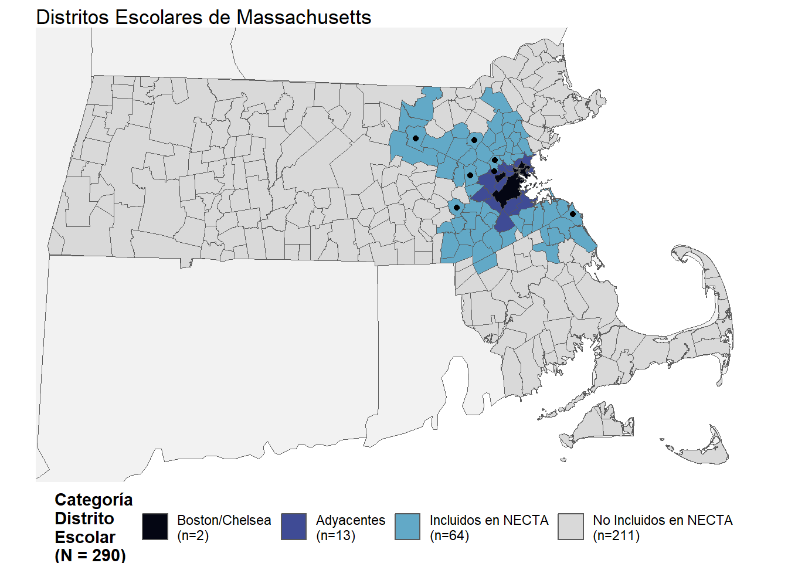
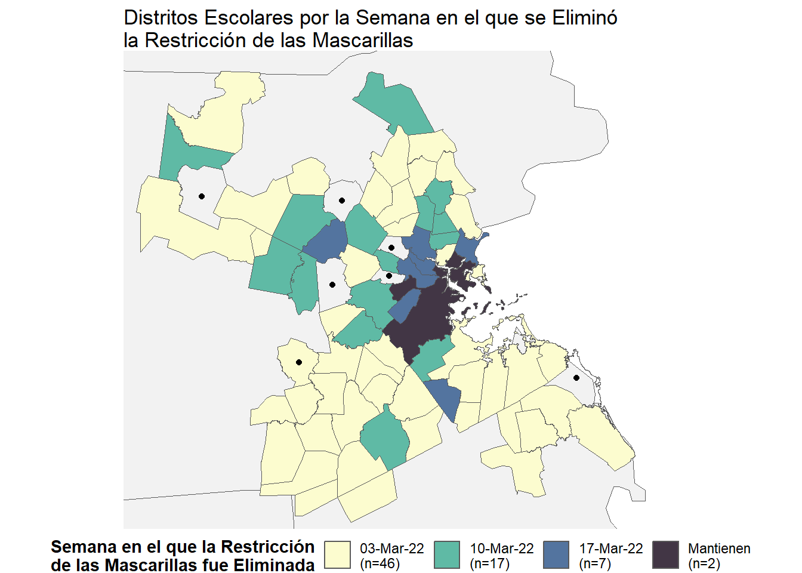
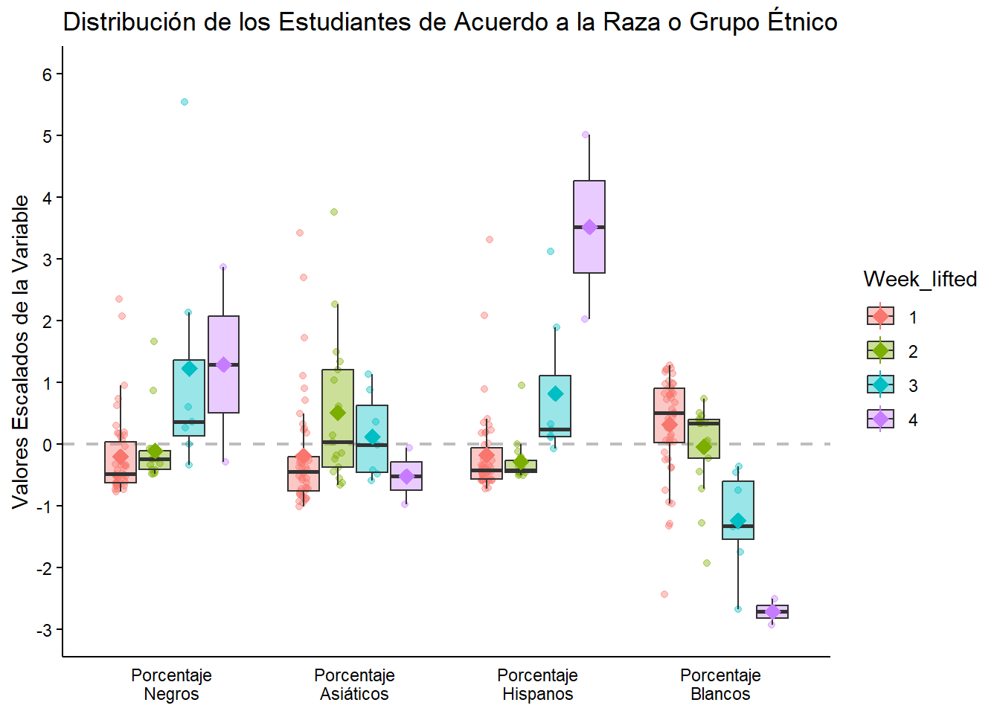
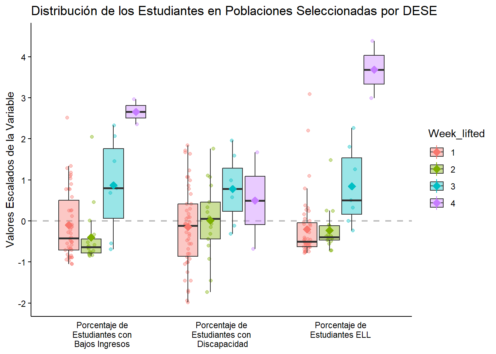
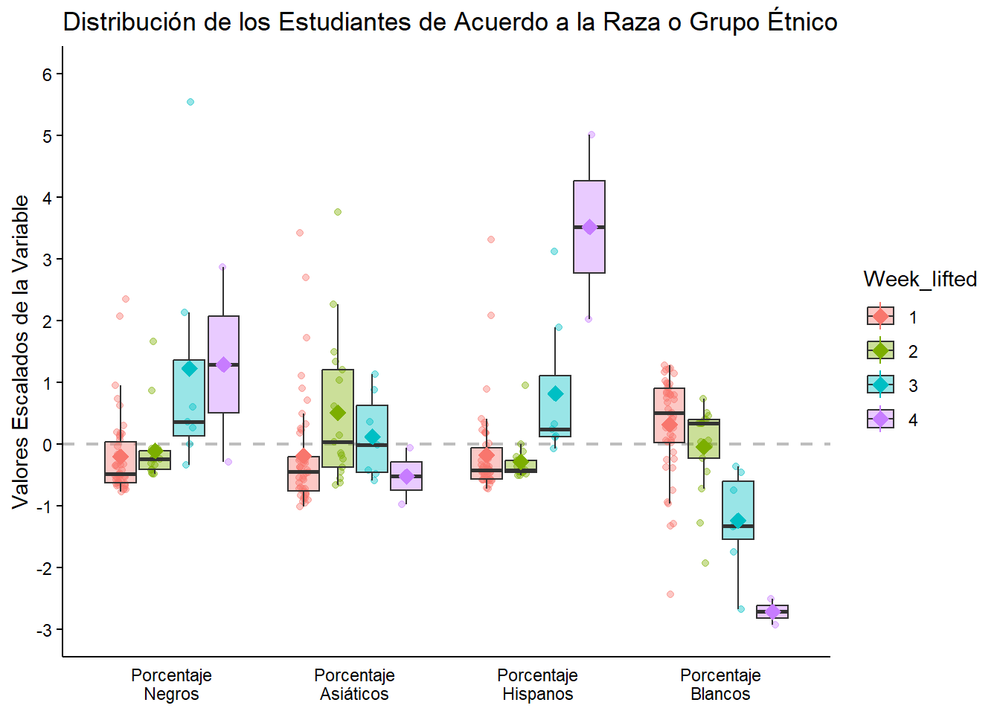

rm(list = ls())
library(pdftools)
library(tidyverse)
library(readxl)
library(zoo)
library(sf)
library(gt)
library(gtsummary)
library(ggpubr)TFG
Librerías
theme_tfg <- theme_minimal() +
theme(axis.title.x = element_blank(),
axis.text = element_text(color = "black"),
axis.line.x.bottom = element_line(color = "black"),
axis.line.y.left = element_line(color = "black"),
axis.ticks.y = element_line(color = "black"),
panel.grid.major = element_blank(),
panel.grid.minor = element_blank())Carga de los Datos
Los datos se han obtenido de la Massachussets DESE, donde los institutos públicos de Massachusetts informaban de forma semanal el número de casos Covid-19 detectados entre el alumnado y el profesorado. Se ha descargado los reportes correspondientes a las 40 semanas del año escolar del curso 2021-2022, el último reporte analizado data del 16 de junio.
Los reportes constan de la siguiente estructura:
La primera página se corresponde a un resumen de los resultados obtenidos.
A partir de la segunda página se listan los distritos escolares junto al número de positivos entre el alumnado y el profesorado, así como el número de pruebas de grupo rutinarias, el número de positivos y su ratio.
A continuación, se muestra una tabla con los casos registrados en las organizaciones educativas colaboradoras.
Finalmente, se listan los casos registrados en los colegios aprobados de educación especial.
De este modo, el objetivo será extraer la información de las tablas correspondientes a la información de los distritos. Para ello, se ha implementado el siguiente código:
- Listado de los archivos. Se lista el nombre de los archivos pdf contenidos en la carpeta data/reportes_covid.
archivos <- list.files("data/reportes_covid",pattern = ".pdf")- Extracción de los datos. Implementamos una función que permita extraer la información deseada.
La función recibe cómo parámetro un iterable con el nombre de los archivos y devuelve un dataframe con los datos correspondientes al código del distrito, nombre del distrito, número de casos covid-19 en alumnos, número de casos covid-19 en profesores, número de pruebas de grupo rutinarias, número de positivos, ratio positivos/pruebas y la fecha del reporte, ésta será extraída del nombre del archivo.
obt_data_distritos <- function(archivos){
fechas <- str_extract(string = archivos,
pattern = "\\d{4}-\\d{1,2}-\\d{1,2}")
df <- data.frame(Code = NA,
Name = NA,
Students = NA,
Staff = NA,
PT = NA,
PPT = NA,
PPR = NA,
Date = NA)
for(i in 1:length(archivos)){
df2 <- pdf_text(paste0("data/reportes_covid/",archivos[i]))
p <- 2
fin <- FALSE
while(fin == FALSE){
if(p == 2){
aux <- df2[[p]] %>%
str_split("\n") %>%
as_tibble(.name_repair=make.names)
aux <- aux %>%
slice(7:nrow(aux)) %>%
separate(X,
into = c("Code",
"Name",
"Students",
"Staff",
"PT",
"PPT",
"PPR"),
sep = "\\s{2,}")%>%
filter(Code != "") %>%
mutate(Date = fechas[i])
}else{
aux <- df2[[p]] %>%
str_split("\n") %>%
as_tibble(.name_repair=make.names) %>%
separate(X, into = c("Code",
"Name",
"Students",
"Staff",
"PT",
"PPT",
"PPR"),
sep = "\\s{2,}") %>%
filter(Code != "") %>%
mutate(Date = fechas[i])
}
df <- rbind(df,aux)
p = p + 1
fin <- grepl(pattern = "Education Collaboratives",df2[[p]])
}
}
return(df)
}
df <- obt_data_distritos(archivos)- Adecuación de las variables. Se convierten al tipo adecuado las variables obtenidas y eliminamos las filas que contenga en la variable
CodeNAs.
df <- df %>%
mutate(Students = as.numeric(Students),
Staff = as.numeric(Staff),
PT = as.numeric(PT),
PPT = as.numeric(PPT),
Date = as.Date(Date)) %>%
filter(!is.na(Code))Selección de los distritos escolares
A partir de los informes importados, se obtiene que 400 distritos escolares han reportado casos de COVID-19 a DESE. Sin embargo, para el estudio se han excluido los distritos metropolitanos, vocacionales y técnicos y se ha restringido a los distritos escolares incluidos en Boston-Newton-Cambridge New England City y Town Area (NECTA), resultando en un total de 79 distritos. Adicionalmente, se han excluido 7 distritos escolares debido a la inconsistencia de los datos enviados.
selected_districts <- read_delim("data/selected_districts.csv",
delim = ";", escape_double = FALSE, trim_ws = TRUE)Rows: 79 Columns: 4
── Column specification ────────────────────────────────────────────────────────
Delimiter: ";"
chr (2): Name, Code
dbl (2): Week_lifted, Neighboring
ℹ Use `spec()` to retrieve the full column specification for this data.
ℹ Specify the column types or set `show_col_types = FALSE` to quiet this message.selected_districts$Week_lifted <- as.factor(selected_districts$Week_lifted)
mapa_eeuu <- st_as_sf(maps::map("state",fill = TRUE, plot = FALSE))
mapa <- sf::st_read("data/schooldistricts/schooldistricts_poly.shp")Reading layer `SCHOOLDISTRICTS_POLY' from data source
`D:\Documentos\TFG-Mascarillas\Trabajo-Fin-Grado\data\schooldistricts\SCHOOLDISTRICTS_POLY.shp'
using driver `ESRI Shapefile'
Simple feature collection with 296 features and 13 fields
Geometry type: MULTIPOLYGON
Dimension: XY
Bounding box: xmin: 33863.73 ymin: 777606.4 xmax: 330810.2 ymax: 959743
Projected CRS: NAD83 / Massachusetts Mainlandmapa <- mapa %>% select(ORG8CODE,geometry)
mapa <- mapa %>%
left_join(selected_districts %>% select(-Name),
by = c("ORG8CODE"="Code"))
mapa$Neighboring[is.na(mapa$Neighboring)] <- 4
mapa$Neighboring <- as.factor(mapa$Neighboring)
selected_districts$Neighboring <- as.factor(selected_districts$Neighboring)ggplot() +
geom_sf(data = mapa_eeuu, fill = "#f2f2f2") +
geom_sf(data = mapa, aes(fill = Neighboring)) +
stat_sf_coordinates(data = mapa %>% filter(Week_lifted == -1)) +
scale_fill_manual(breaks = c(1,2,3,4),
values = c("#040613","#3f4b95","#62a9c7","#d9d9d9"),
labels = c("Boston/Chelsea\n(n=2)",
"Adyacentes\n(n=13)",
"Incluidos en NECTA\n(n=64)",
"No Incluidos en NECTA\n(n=211)")) +
labs(title = "Distritos Escolares de Massachusetts",
fill = "Categoría\nDistrito\nEscolar\n(N = 290)") +
coord_sf(xlim = c(-73.4,-70), ylim = c(41.25,42.85)) +
theme_void() +
theme(legend.position = "bottom",
legend.title = element_text(face="bold"))
ggplot() +
geom_sf(data = mapa_eeuu, fill = "#f2f2f2") +
geom_sf(data = mapa %>% filter(!is.na(Week_lifted) & Week_lifted != -1),
aes(fill = Week_lifted)) +
geom_sf(data = mapa %>% filter(Week_lifted == -1), fill = NA) +
stat_sf_coordinates(data = mapa %>% filter(Week_lifted == -1)) +
scale_fill_manual(breaks = c(1,2,3,4),
values = c("#fcfccf","#5fbaa5","#53749f","#423645"),
labels = c("03-Mar-22\n(n=46)",
"10-Mar-22\n(n=17)",
"17-Mar-22\n(n=7)",
"Mantienen\n(n=2)")) +
labs(title = "Distritos Escolares por la Semana en el que se Eliminó\nla Restricción de las Mascarillas",
fill = "Semana en el que la Restricción\nde las Mascarillas fue Eliminada") +
coord_sf(xlim = c(-71.7,-70.6), ylim = c(42,42.7)) +
theme_void() +
theme(legend.position = "bottom",
legend.title = element_text(face="bold"))
df <- inner_join(df,selected_districts %>%
filter(Week_lifted != -1)
%>% select(-Name))Joining with `by = join_by(Code)`length(unique(df$Name))[1] 72df <- df %>% filter(!(Date >= as.Date("2022-06-02") & Name == "Brookline"))Porcentaje de casos pre-Omicron, durante la ola Omicron BA.1, y después de la eliminación de la restricción de la mascarilla.
df_tabla <- df %>%
mutate(All = Students + Staff,
Week = round(as.numeric((Date - as.Date("2021-09-16"))/7+1)),
Group_week = case_when(Week <= 10 ~ 1,
Week >= 11 & Week <= 25 ~ 2,
Week >= 26 ~ 3)) %>%
select(-c(PT,PPT,PPR,Date,Name,Week)) %>%
pivot_longer(c(Students,Staff,All), names_to = "names", values_to = "values")
df_tabla_aux <- df_tabla
df_tabla_aux <- df_tabla_aux %>% mutate(Week_lifted = "All")
df_tabla <- rbind(df_tabla, df_tabla_aux)
n_districts <- df_tabla %>%
group_by(Week_lifted) %>%
summarise(n = length(unique(Code)))
df_tabla <- df_tabla %>%
group_by(Week_lifted, Group_week, names) %>%
summarise(values = sum(values)) %>%
left_join(n_districts) %>%
mutate(Week_lifted = case_when(Week_lifted == "All" ~ "ALL",
Week_lifted == 4 ~ "Did not lift",
Week_lifted == 3 ~ "17-Mar-22",
Week_lifted == 2 ~ "10-Mar-22",
Week_lifted == 1 ~ "03-Mar-22"
),
Group_week = case_when(Group_week == 1 ~ "Pre-Omicron (Weeks 1-10, n= 10 weeks)",
Group_week == 2 ~ "Omicron BA.1 (Weeks 11-25, n= 15 weeks)",
Group_week == 3 ~ "Post-Lifting/ Omicron BA.2+ (Weeks 26-40, n=15 weeks)")) %>%
pivot_wider(names_from = Group_week, values_from = values)`summarise()` has grouped output by 'Week_lifted', 'Group_week'. You can
override using the `.groups` argument.
Joining with `by = join_by(Week_lifted)`names(df_tabla)[1] <- "Week Masking Requirement Lifted"
names(df_tabla)[3] <- "n Districts"df_tabla %>%
gt(groupname_col = "names",
caption = "Tabla 1. Percentage of cases occurring pre-Omicron,during the Omicron BA.1 wave, and after masking requirements were lifted ") %>%
summary_rows(
groups = TRUE
)| Week Masking Requirement Lifted | n Districts | Pre-Omicron (Weeks 1-10, n= 10 weeks) | Omicron BA.1 (Weeks 11-25, n= 15 weeks) | Post-Lifting/ Omicron BA.2+ (Weeks 26-40, n=15 weeks) |
|---|---|---|---|---|
| All | ||||
| 03-Mar-22 | 46 | 2750 | 33941 | 18089 |
| 10-Mar-22 | 17 | 1212 | 15142 | 13356 |
| 17-Mar-22 | 7 | 525 | 5276 | 4222 |
| Did not lift | 2 | 686 | 8343 | 4437 |
| ALL | 72 | 5173 | 62702 | 40104 |
| Staff | ||||
| 03-Mar-22 | 46 | 362 | 4896 | 3941 |
| 10-Mar-22 | 17 | 159 | 2227 | 2214 |
| 17-Mar-22 | 7 | 86 | 914 | 963 |
| Did not lift | 2 | 161 | 2519 | 1038 |
| ALL | 72 | 768 | 10556 | 8156 |
| Students | ||||
| 03-Mar-22 | 46 | 2388 | 29045 | 14148 |
| 10-Mar-22 | 17 | 1053 | 12915 | 11142 |
| 17-Mar-22 | 7 | 439 | 4362 | 3259 |
| Did not lift | 2 | 525 | 5824 | 3399 |
| ALL | 72 | 4405 | 52146 | 31948 |
Análisis Estadístico
enrollmentbygrade <- read_excel("data/enrollmentbygrade.xlsx",
skip = 1)
enrollmentbygrade <- enrollmentbygrade %>%
select(`District Name`, `District Code`, `Total`)
enrollmentbygrade <- enrollmentbygrade %>%
mutate(Total = as.numeric(str_remove(Total,",")))
enrollmentbygrade <- enrollmentbygrade %>%
inner_join(selected_districts %>%
filter(Week_lifted != -1) %>%
select(-Neighboring, -Name),
by = c("District Code"="Code"))Análisis Descriptivo
enrollmentbyracegender <- read_excel("data/enrollmentbyracegender.xlsx",
skip = 1)
enrollmentbyracegender[,3:12] <- apply(enrollmentbyracegender[,3:12], 2,
function(x){as.numeric(str_remove(x,","))})
glimpse(enrollmentbyracegender)Rows: 401
Columns: 12
$ `District Name` <chr> "Abby Kelley Foster Charter Public…
$ `District Code` <chr> "04450000", "00010000", "04120000"…
$ `African American` <dbl> 54.6, 5.2, 61.0, 3.0, 1.2, 2.0, 2.…
$ Asian <dbl> 3.0, 2.7, 0.4, 33.4, 0.9, 14.4, 3.…
$ Hispanic <dbl> 20.5, 12.3, 30.0, 7.0, 4.4, 7.3, 1…
$ White <dbl> 16.0, 77.1, 6.9, 51.2, 89.7, 69.9,…
$ `Native American` <dbl> 0.5, 0.5, 0.0, 0.1, 0.2, 0.0, 0.1,…
$ `Native Hawaiian, Pacific Islander` <dbl> 0.1, 0.1, 0.2, 0.1, 0.0, 0.0, 0.0,…
$ `Multi-Race, Non-Hispanic` <dbl> 5.3, 2.1, 1.6, 5.2, 3.6, 6.4, 3.1,…
$ Males <dbl> 46.1, 50.9, 52.0, 51.4, 53.0, 53.5…
$ Females <dbl> 53.9, 49.0, 48.0, 48.4, 47.0, 46.1…
$ `Non-Binary` <dbl> 0.0, 0.1, 0.0, 0.2, 0.0, 0.4, 0.1,…enrollmentbyracegender <- enrollmentbyracegender %>%
inner_join(selected_districts %>%
filter(Week_lifted != -1) %>%
select(Code,Week_lifted),
by = c("District Code" = "Code"))enrollmentbyracegender$african_scale <- scale(enrollmentbyracegender$`African American`)[,1]
enrollmentbyracegender$asian_scale <- scale(enrollmentbyracegender$`Asian`)[,1]
enrollmentbyracegender$hispanic_scale <- scale(enrollmentbyracegender$`Hispanic`)[,1]
enrollmentbyracegender$white_scale <- scale(enrollmentbyracegender$`White`)[,1]
enrollmentbyracegender <- enrollmentbyracegender %>%
select(`District Code`,Week_lifted,african_scale,asian_scale,hispanic_scale,white_scale)
enrollmentbyracegender %>%
pivot_longer(3:6,names_to = "names",values_to = "values") %>%
ggplot(aes(x = names, y = values, fill = Week_lifted)) +
geom_hline(yintercept = 0, color = "grey", linetype = 2, size = 0.8) +
geom_point(aes(color = Week_lifted), position = position_jitterdodge(jitter.width = 0.2), alpha = 0.4) +
geom_boxplot(outliers = FALSE, alpha = 0.4) +
stat_summary(aes(color = Week_lifted), fun.y="mean", shape=23, position = position_jitterdodge(jitter.width = 0)) +
scale_y_continuous(breaks=seq(-3,6,1), limits = c(-3,6)) +
scale_x_discrete(labels=c("african_scale" = "Porcentaje\nNegros",
"asian_scale" = "Porcentaje\nAsiáticos",
"hispanic_scale" = "Porcentaje\nHispanos",
"white_scale" = "Porcentaje\nBlancos")) +
labs(y = "Valores Escalados de la Variable", title = "Distribución de los Estudiantes de Acuerdo a la Raza o Grupo Étnico") +
theme_tfgWarning: Using `size` aesthetic for lines was deprecated in ggplot2 3.4.0.
ℹ Please use `linewidth` instead.Warning: The `fun.y` argument of `stat_summary()` is deprecated as of ggplot2 3.3.0.
ℹ Please use the `fun` argument instead.Warning: Removed 16 rows containing missing values or values outside the scale range
(`geom_segment()`).
selectedpopulations <- read_excel("data/selectedpopulations.xlsx",
skip = 1)New names:
• `High Needs #` -> `High Needs #...15`
• `High Needs #` -> `High Needs #...16`selectedpopulations[,3:18] <- apply(selectedpopulations[,3:18], 2, function(x){as.numeric(str_remove(x,","))})
glimpse(selectedpopulations)Rows: 401
Columns: 18
$ `District Name` <chr> "Abby Kelley Foster Charter Public (Dis…
$ `District Code` <chr> "04450000", "00010000", "04120000", "06…
$ `First Language Not English #` <dbl> 965, 330, 160, 1095, 14, 233, 471, 438,…
$ `First Language Not English %` <dbl> 67.7, 15.3, 31.4, 21.1, 1.5, 24.1, 13.6…
$ `English Language Learner #` <dbl> 221, 195, 46, 256, 4, 26, 171, 309, 29,…
$ `English Language Learner %` <dbl> 15.5, 9.1, 9.0, 4.9, 0.4, 2.7, 4.9, 32.…
$ `Students With Disabilities #` <dbl> 189, 383, 133, 775, 136, 41, 596, 156, …
$ `Students With Disabilities %` <dbl> 13.3, 17.5, 26.1, 14.7, 14.4, 4.2, 17.0…
$ `Low Income #` <dbl> 982, 847, 327, 566, 346, 142, 1522, 721…
$ `Low Income %` <dbl> 68.9, 39.3, 64.1, 10.9, 37.0, 14.7, 43.…
$ `Free Lunch #` <dbl> NA, NA, NA, NA, NA, NA, NA, NA, NA, NA,…
$ `Free Lunch %` <dbl> NA, NA, NA, NA, NA, NA, NA, NA, NA, NA,…
$ `Reduced Lunch #` <dbl> NA, NA, NA, NA, NA, NA, NA, NA, NA, NA,…
$ `Reduced Lunch %` <dbl> NA, NA, NA, NA, NA, NA, NA, NA, NA, NA,…
$ `High Needs #...15` <dbl> 1101, 1069, 384, 1513, 431, 248, 1889, …
$ `High Needs #...16` <dbl> 77.2, 48.8, 75.3, 28.8, 45.7, 25.7, 54.…
$ `Economically Disadvantaged #` <dbl> NA, NA, NA, NA, NA, NA, NA, NA, NA, NA,…
$ `Economically Disadvantaged %` <dbl> NA, NA, NA, NA, NA, NA, NA, NA, NA, NA,…selectedpopulations <- selectedpopulations %>%
select(`District Code`, `English Language Learner %`, `Students With Disabilities %`, `Low Income %`)
selectedpopulations <- selectedpopulations %>% inner_join(selected_districts %>% filter(Week_lifted != -1) %>% select(Code,Week_lifted), by = c("District Code" = "Code"))
glimpse(selectedpopulations)Rows: 72
Columns: 5
$ `District Code` <chr> "06000000", "00090000", "06160000", "00…
$ `English Language Learner %` <dbl> 4.9, 3.0, 3.6, 8.3, 30.4, 6.8, 9.0, 6.1…
$ `Students With Disabilities %` <dbl> 14.7, 19.9, 20.5, 13.5, 21.9, 20.8, 17.…
$ `Low Income %` <dbl> 10.9, 12.3, 33.8, 11.5, 71.2, 30.0, 14.…
$ Week_lifted <fct> 1, 2, 2, 2, 4, 1, 3, 1, 3, 1, 1, 4, 1, …selectedpopulations$lis_scale <- scale(selectedpopulations$`Low Income %`)[,1]
selectedpopulations$sd_scale <- scale(selectedpopulations$`Students With Disabilities %`)[,1]
selectedpopulations$ell_scale <- scale(selectedpopulations$`English Language Learner %`)[,1]selectedpopulations <- selectedpopulations %>%
select(`District Code`,Week_lifted,lis_scale,sd_scale,ell_scale)
selectedpopulations %>%
pivot_longer(3:5,names_to = "names",values_to = "values") %>%
ggplot(aes(x = names, y = values, fill = Week_lifted)) +
geom_hline(yintercept = 0, color = "grey", linetype = 2, size = 0.8) +
geom_point(aes(color = Week_lifted), position = position_jitterdodge(jitter.width = 0.2), alpha = 0.4) +
geom_boxplot(outliers = FALSE, alpha = 0.4) +
stat_summary(aes(color = Week_lifted), fun.y="mean", shape=23, position = position_jitterdodge(jitter.width = 0))+
scale_y_continuous(breaks=seq(-2,4,1), limits = c(-2,4.5)) +
scale_x_discrete(limits = c("lis_scale","sd_scale","ell_scale"),
labels=c("lis_scale" = "Porcentaje de\nEstudiantes con\nBajos Ingresos",
"sd_scale" = "Porcentaje de\nEstudiantes con\n Discapacidad",
"ell_scale" = "Porcentaje de\nEstudiantes ELL")) +
labs(y = "Valores Escalados de la Variable", title = "Distribución de los Estudiantes en Poblaciones Seleccionadas por DESE") +
theme_tfg
staffracegender <- read_excel("data/staffracegender.xlsx",
skip = 1)
staffracegender[,3:12] <- apply(staffracegender[,3:12], 2, function(x){as.numeric(str_remove(x,","))})
glimpse(staffracegender)Rows: 401
Columns: 12
$ `District/School Name` <chr> "Abby Kelley Foster Charter Pu…
$ `District/School Code` <chr> "04450000", "00010000", "04120…
$ `African American (%)` <dbl> 4.5, 0.7, 27.9, 0.6, 0.8, 0.6,…
$ `Asian (%)` <dbl> 0.5, 0.7, 8.6, 5.3, 0.0, 4.9, …
$ `Hispanic (%)` <dbl> 4.1, 3.4, 9.5, 1.9, 0.0, 1.4, …
$ `White (%)` <dbl> 89.3, 94.9, 52.9, 91.5, 99.2, …
$ `Native American (%)` <dbl> 0.0, 0.0, 0.0, 0.1, 0.0, 0.0, …
$ `Native Hawaiian, Pacific Islander (%)` <dbl> 0.5, 0.0, 0.0, 0.0, 0.0, 0.0, …
$ `Multi-Race,Non-Hispanic (%)` <dbl> 1.0, 0.4, 1.1, 0.6, 0.0, 2.4, …
$ `Females (%)` <dbl> 78.9, 83.8, 66.3, 86.4, 84.5, …
$ `Males (%)` <dbl> 21.1, 15.9, 33.7, 13.6, 15.5, …
$ `FTE Count` <dbl> 194.2, 280.6, 94.9, 785.1, 121…staffracegender <- staffracegender %>%
select(`District/School Code`, `African American (%)`, `Asian (%)`, `Hispanic (%)`, `White (%)`)
staffracegender <- staffracegender %>% inner_join(selected_districts %>% filter(Week_lifted != -1) %>% select(Code,Week_lifted), by = c("District/School Code" = "Code"))
glimpse(staffracegender)Rows: 72
Columns: 6
$ `District/School Code` <chr> "06000000", "00090000", "06160000", "00260000",…
$ `African American (%)` <dbl> 0.6, 0.5, 0.7, 2.4, 28.9, 1.1, 7.8, 0.9, 14.6, …
$ `Asian (%)` <dbl> 5.3, 3.9, 0.9, 2.9, 5.4, 1.2, 5.6, 2.1, 5.8, 0.…
$ `Hispanic (%)` <dbl> 1.9, 3.1, 1.5, 2.4, 13.4, 0.5, 4.4, 1.9, 8.4, 1…
$ `White (%)` <dbl> 91.5, 91.6, 96.1, 90.1, 51.8, 96.6, 81.1, 94.7,…
$ Week_lifted <fct> 1, 2, 2, 2, 4, 1, 3, 1, 3, 1, 1, 4, 1, 2, 2, 1,…staffracegender$african_scale <- scale(staffracegender$`African American (%)`)[,1]
staffracegender$asian_scale <- scale(staffracegender$`Asian (%)`)[,1]
staffracegender$hispanic_scale <- scale(staffracegender$`Hispanic (%)`)[,1]
staffracegender$white_scale <- scale(staffracegender$`White (%)`)[,1]
staffracegender <- staffracegender %>%
select(`District/School Code`,Week_lifted,african_scale,asian_scale,hispanic_scale,white_scale)
staffracegender %>%
pivot_longer(3:6,names_to = "names",values_to = "values") %>%
ggplot(aes(x = names, y = values, fill = Week_lifted)) +
geom_hline(yintercept = 0, color = "grey", linetype = 2, size = 0.8) +
geom_point(aes(color = Week_lifted), position = position_jitterdodge(jitter.width = 0.2), alpha = 0.4) +
geom_boxplot(outliers = FALSE, alpha = 0.4) +
stat_summary(aes(color = Week_lifted), fun.y="mean", shape=23, position = position_jitterdodge(jitter.width = 0)) +
scale_y_continuous(breaks=seq(-5,7,1), limits = c(-5,7)) +
scale_x_discrete(labels=c("african_scale" = "Porcentaje\nNegros",
"asian_scale" = "Porcentaje\nAsiáticos",
"hispanic_scale" = "Porcentaje\nHispanos",
"white_scale" = "Porcentaje\nBlancos")) +
labs(y = "Valores Escalados de la Variable", title = "Distribución del Staff de Acuerdo a la Raza o Grupo Étnico") +
theme_tfgWarning: Removed 16 rows containing missing values or values outside the scale range
(`geom_segment()`).